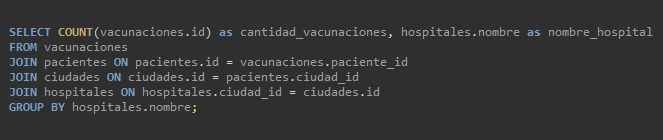
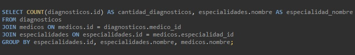
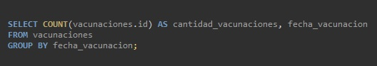
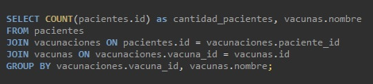
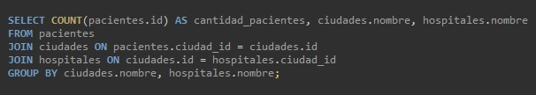

Comparación datos de hospitales regionales
Link a la fuente de datos (Base de datos SQL)
Para obtener la cantidad de vacunas aplicadas por cada hospital, uní mediantes JOINS las tablas de vacunaciones, pacientes, ciudades y hospitales.
Mediantes JOINS uní las tablas de diagnósticos, médicos y especialidades para así obtener que cantidad de diagnósticos tuvo cada especialidad.
Para confeccionar el gráfico de línea obtuve las fechas de cada vacunación y cuantas vacunas se dieron en cada una.
Mediantes JOINS, uniendo las tablas de pacientes, vacunaciones y vacunas, conseguí cuantos pacientes tienen cada diagnóstico.
Para obtener la cantidad de pacientes en cada uno de los tres hospitales, uní mediante JOINS a las tablas de pacientes, ciudades y hospitales.
